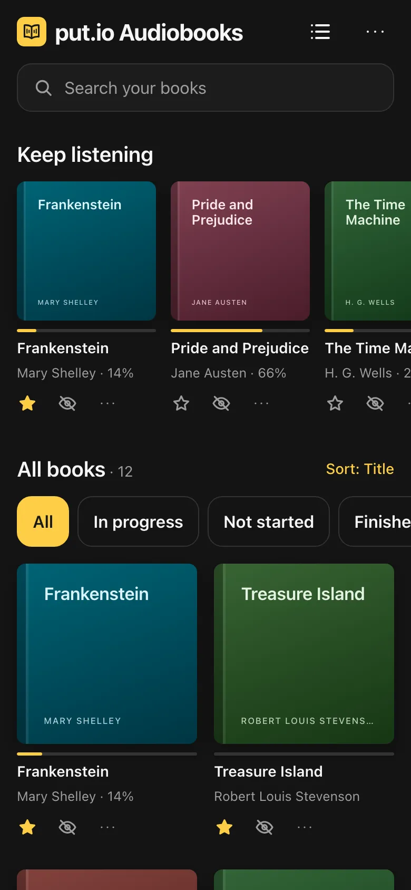
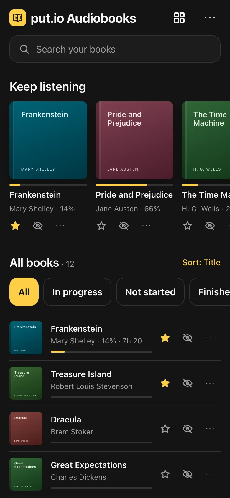

put.io Audiobooks
Your put.io audiobooks, played like audiobooks.
Chapters, speed, a sleep timer, and it remembers your place on every device.


An audiobook player for put.io
put.io plays your files one at a time, like any other audio. This app turns the folder your audiobooks live in into a library, and plays each book as a book.
- Chapters from M4B files, or one chapter per MP3, with previous and next chapter.
- Playback speed from 0.5x to 3.5x, and a sleep timer that can stop at the end of the chapter.
- Remembers your place in every book and syncs it between your devices.
- Download a book to listen offline.
- Lock screen and headphone controls.
- Search, covers, and a “Keep listening” shelf for books you have started.
Works with the folders you already have
A folder of audio files becomes one book. CD and disc subfolders are merged, and multi-part M4Bs are joined. Plays MP3, M4B, M4A, AAC, OGG, Opus, FLAC and WAV.
Free, with no server in between
Install it from the browser on iPhone, Android or desktop. There is no account other than your put.io one, and the code is open source on GitHub.
An unofficial app, not affiliated with put.io. It talks to put.io directly from this device. Books without a cover are looked up by title on Apple and Open Library.